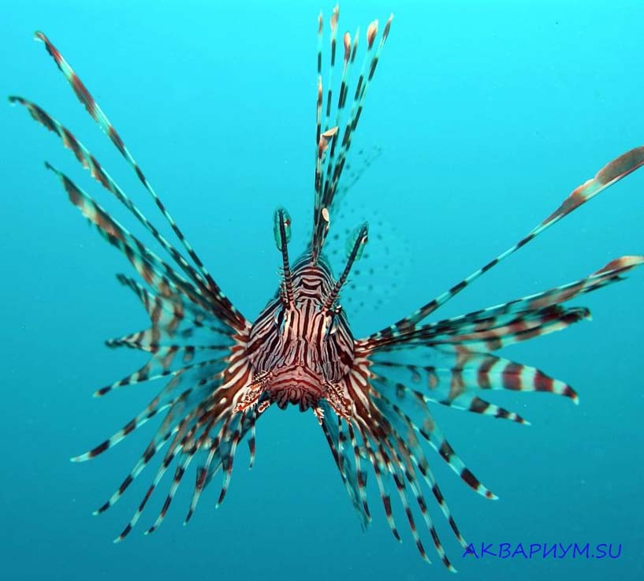
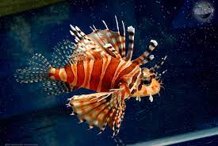

С перва сегодня мы поговорим про рыбу Крылатка-зебра.
[ .: Крылатка-зебра[1], или рыба-зебра[1][2], или полосатая крылатка[2] (лат. Pterois volitans) — вид лучепёрых рыб семейства скорпеновых. .: Максимальная длина тела 45,7 см[3]. Это хищные рыбы. Они могут легко проглатывать рыб длиной до двух третей собственной. Окраска тела красная с многочисленными светлыми полосками; грудные плавники большие. Масса тела достигает 1 кг. Крылатка имеет длинные ленты спинных и грудных плавников — в этих роскошных веерообразных плавниках таятся острые ядовитые иглы. Укол колючками этой рыбы очень болезнен. Яд вызывает судороги и паралич. На месте прокола возникает некроз или сепсис. Часто при уколах люди теряют сознание.
Научная классификация Домен: Эукариоты Царство: Животные Тип: Хордовые Класс: Лучепёрые рыбы Отряд: Скорпенообразные Семейство: Скорпеновые Род: Крылатки Вид: Крылатка-зебра
(Переходите на Рыбы 2
 